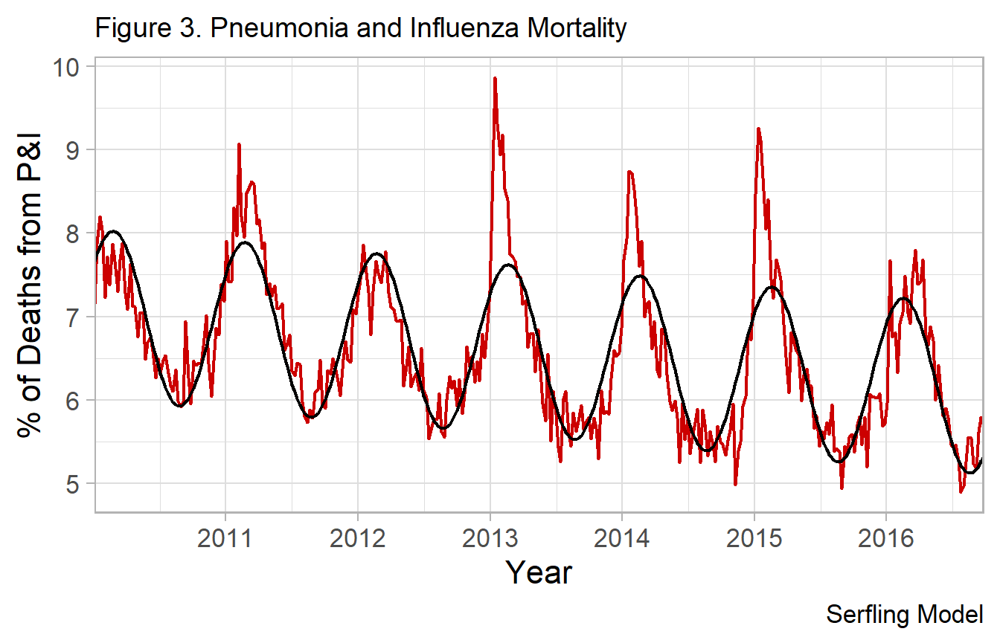

Serfling Model Background
Kevin W. McConeghy
2019-06-06
Source:vignettes/04-serfling.Rmd
04-serfling.RmdThe primary method paper was a 1963 paper published by Robert Serfling working for the Centers for Disease Control and Prevention.
The paper outlines a strategy for estimating what proportion of deaths are due to influenza. The underlying issue is that many deaths reported due to influenza and pneumonia may be due to other causes, while many deaths attritable other causes may be due to influenza. The primary goal was to develop a “standard curve of expected seasonal mortality”. The concept was that an individual could use historical data to estimate seasonal trends in influenza. Then for a given place-time an researcher could evaluate how many deaths occurred in excess of this baseline rate. Much of the original paper is of little interest given modern computing methods, but the basic concept persists as a reasonable approach to estimating “flu” deaths.
Influenza
Critically, it should be understood that influenza epidemics are highly seasonal with spikes in the winter months, commonly January - February. This seasonality leads to a cyclical rate of influenza morbidity and mortality.
It was noted by early researchers that the rate of reported deaths (red line), may be modeled by a trigonomic function.
Linear and Cyclical Regression Models
The classical ordinary least squares framework is often described in matrix notation as:
\[y_i = X_i\beta + u_{i} \quad \textrm{where} \quad i = 1,..,n\]
Where \(y\) is a dependent variable, \(X\) is a vector of regressors (i.e. independent variables) with \(k\)-dimensions, \(\beta\) is a vector of the coefficients for \(X\), and \(u\) is the residual error term. often simply as: \(y= X\beta+u\).
Given a simple additive model with one independent variable t: \[Eq \ 1. \ y = \alpha_0 + \beta_1*t_1 + u\]
Let t, be the unit of time in figure 1 (week = 1, week=2, …). The above model is inadequate, and will poorly fit the data (figure) because the secular trend is non-linear.
Early investigators such as Serfling proposed that a Fourier term be added to model the cycle like so: \[Eq \ 2. \ y = \alpha_0 + \beta_1*t + sine(\frac{2 \pi t}{52}) + cos(\frac{2 \pi t}{52}) + u\] The original paper used 4-week periods so the period denominator is 13. This allows us to use a linear model which accounts for the cyclical nature of the disease. The original paper recommends one Fourier term.
Model 1: Original Serfling Model
The basic linear equation is like so: \[Y = beta_0*\alpha + beta_1*t + beta_6*cos(\frac{2 \pi t}{52}) + beta_7*sin(\frac{2 \pi t}{52})\] Where in our weekly CDC data, t is a single week, with a 52 week cycle. In the original paper it was 4-week periods, with 13 per annual cycle.
Method 1: Endemic baseline
Select a season of low epidemicity:
g1 <- ggplot(df_cdc, aes(x=yrweek_dt, y=fludeaths)) +
geom_line(size=0.8) +
scale_x_date(labels = date_format("%Y"), date_breaks="1 year",
expand=c(0, .9)) +
xlab("Year") +
ylab("No. of Deaths from P&I") +
theme_light(base_size=16) +
theme(plot.title = element_text(size=14)) +
labs(title="Figure 1. Pneumonia and Influenza Mortality") +
theme(axis.text.x=element_text(angle=90, hjust=1))
g12011 / 2012 is period of lowest influenza activity, so taken as the baseline.
This season was used to estimate parameters for the above equation then fit to a future season.
Estimate model for 2011 / 2012 season
- fitting one season
- one fourier term
df_low <- df_cdc %>%
dplyr::filter(yrweek_dt >= ymd('2011-10-01') & yrweek_dt <= ymd('2012-09-30')) %>%
mutate(t = row_number(), #set origin to october
theta = 2*t / 52,
sin_2 = sinpi(theta),
cos_2 = cospi(theta))
lm(fludeaths ~ t + sin_2 + cos_2, #note the 0 term
data=df_low, na.action = na.exclude) -> mod_1_low
summary(mod_1_low)
#>
#> Call:
#> lm(formula = fludeaths ~ t + sin_2 + cos_2, data = df_low, na.action = na.exclude)
#>
#> Residuals:
#> Min 1Q Median 3Q Max
#> -177.38 -20.04 2.51 39.62 93.34
#>
#> Coefficients:
#> Estimate Std. Error t value Pr(>|t|)
#> (Intercept) 678.376 21.969 30.879 < 2e-16 ***
#> t 1.674 0.763 2.194 0.033 *
#> sin_2 116.764 16.593 7.037 5.82e-09 ***
#> cos_2 -99.431 10.801 -9.206 2.91e-12 ***
#> ---
#> Signif. codes: 0 '***' 0.001 '**' 0.01 '*' 0.05 '.' 0.1 ' ' 1
#>
#> Residual standard error: 55.53 on 49 degrees of freedom
#> Multiple R-squared: 0.7564, Adjusted R-squared: 0.7415
#> F-statistic: 50.73 on 3 and 49 DF, p-value: 4.649e-15sin_2 is the Fourier term: sin (2\[\pi\]t) / L where L is length of cycle (i.e. 52 weeks)
Fourier series can be iteratively explored for best fit by adjusting the harmonic formula.
Inclusion of biannual or monthly cycles can be done with additional Fourier terms.
E.g. With semi-annual Fourier term:
\[Y = beta_0*\alpha + beta_1*t + beta_6*cos(\frac{2 \pi t}{52}) + beta_7*sin(\frac{2 \pi t}{52}) + beta_8*cos(\frac{2 \pi t}{26}) + beta_9*sin(\frac{2 \pi t}{26})\]
df_low_pred <- suppressWarnings(predict(mod_1_low, se.fit=TRUE,
interval="prediction", level=0.90))
df_low <- bind_cols(df_low, pred_yhat_0 = df_low_pred$fit[, 'fit'])
g_mod_1 <- ggplot(df_low) +
geom_line(aes(x=yrweek_dt, y=fludeaths), size=0.8, alpha=0.5) +
geom_line(aes(x=yrweek_dt, y=pred_yhat_0), linetype='dashed', size=1, color = 'blue') +
scale_x_date(labels = date_format("%Y"), date_breaks="1 year",
expand=c(0, .9)) +
xlab("Year") +
ylab("No. of deaths") +
theme_light(base_size=16) +
theme(plot.title = element_text(size=14)) +
labs(title="Figure 2. Original Serfling equation fit to 2011/12") +
theme(axis.text.x=element_text(angle=90, hjust=1))
g_mod_1The fit works well for this particular period.
Apply model estimates to fit 2012 / 2013 year.
df_high <- df_cdc %>%
dplyr::filter(yrweek_dt >= ymd('2012-10-01') & yrweek_dt <= ymd('2013-09-30')) %>%
mutate(t = row_number(), #set origin to october
theta = 2*t / 52,
sin_2 = sinpi(theta),
cos_2 = cospi(theta))
df_pred <- predict(mod_1_low, newdata=df_high, se.fit=TRUE,
interval="prediction", level=0.90)
pred_yhat_0 <- df_pred$fit[,1] #fitted values
pred_yhat_upr <- df_pred$fit[,3]
df_mod_1 <- df_high %>%
add_column(., pred_yhat_0, pred_yhat_upr) g_mod_1 <- ggplot(df_mod_1) +
geom_line(aes(x=yrweek_dt, y=fludeaths), size=0.8, alpha=0.5) +
geom_line(aes(x=yrweek_dt, y=pred_yhat_0), linetype='dashed', size=1, color = 'blue') +
geom_line(aes(x=yrweek_dt, y=pred_yhat_upr), linetype='dotted', color='red', size=1) +
scale_x_date(labels = date_format("%Y"), date_breaks="1 year",
expand=c(0, .9)) +
xlab("Year") +
ylab("No. of deaths") +
theme_light(base_size=16) +
theme(plot.title = element_text(size=14)) +
labs(title="Figure 3. 2011/12 estimates fitted to 2012/13 season") +
theme(axis.text.x=element_text(angle=90, hjust=1))
g_mod_1Gray - observed deaths
Blue dash - fitted curved for 2011 / 2012, applied to 2012 / 2013 Red dotted - upper 90% prediction interval
In the original paper, deaths exceeding the 90% interval would be considered in excess, and if two consecutive weeks occurred than that was a ‘epidemic’.
However, it was noted in the paper this was less practical when consecutive years occur without a very low endemicity flu season. An alternative approach was given that is more generalizable.
Method 2: Secular trend differencing
One approach is to estimate the model using the previous 5 years of data. Assuming this will average out epidemics and give a baseline measure of activity.
- Fit a model using first 4 seasons, apply to 5th season
df_cdc_2 <- df_cdc %>%
dplyr::filter(fluyr<2014) %>%
mutate(t = row_number(), #set origin to october
theta = 2*t / 52,
sin_2 = sinpi(theta),
cos_2 = cospi(theta))
mod_1_sec_fit <- df_cdc_2 %>%
lm(fludeaths ~ t + sin_2 + cos_2, #note the 0 term
data=., na.action = na.exclude)
df_pred <- predict(mod_1_sec_fit, newdata = df_cdc, se.fit=TRUE,
interval="prediction", level=0.90)
pred_yhat_0 <- df_pred$fit[,1] #fitted values
pred_yhat_upr <- df_pred$fit[,3]
df_mod_1_sec <- df_cdc %>%
add_column(., pred_yhat_0, pred_yhat_upr) g_mod_1 <- ggplot(df_mod_1_sec[df_mod_1_sec$fluyr<2014, ]) +
geom_line(aes(x=yrweek_dt, y=fludeaths), size=0.8, alpha=0.5) +
geom_line(aes(x=yrweek_dt, y=pred_yhat_0), linetype='dashed', size=1, color = 'blue') +
geom_line(aes(x=yrweek_dt, y=pred_yhat_upr), linetype='dotted', color='red', size=1) +
scale_x_date(labels = date_format("%Y"), date_breaks="1 year",
expand=c(0, .9)) +
xlab("Year") +
ylab("No. of deaths") +
theme_light(base_size=16) +
theme(plot.title = element_text(size=14)) +
labs(title="Figure 3. 2010 - 2014 estimates fitted") +
theme(axis.text.x=element_text(angle=90, hjust=1))
g_mod_1Model fit from first four seasons, notice the 2012 / 2013 season does not fit the curve well.
g_mod_1 <- ggplot(df_mod_1_sec[df_mod_1_sec$fluyr==2014, ]) +
geom_line(aes(x=yrweek_dt, y=fludeaths), size=0.8, alpha=0.5) +
geom_line(aes(x=yrweek_dt, y=pred_yhat_0), linetype='dashed', size=1, color = 'blue') +
geom_line(aes(x=yrweek_dt, y=pred_yhat_upr), linetype='dotted', color='red', size=1) +
scale_x_date(labels = date_format("%Y"), date_breaks="1 year",
expand=c(0, .9)) +
xlab("Year") +
ylab("No. of deaths") +
theme_light(base_size=16) +
theme(plot.title = element_text(size=14)) +
labs(title="Figure 3. 2010 - 2014 estimates fitted to 2014/2015 season") +
theme(axis.text.x=element_text(angle=90, hjust=1))
g_mod_1
Gray - observed deaths
Blue dash - fitted curved for 2011 / 2012, applied to 2012 / 2013 Red dotted - upper 90% prediction interval
In quantitative terms:
df_rpt <- df_mod_1_sec %>%
dplyr::filter(fluyr==2014) %>%
select(fluyr, week, fludeaths, pred_yhat_0, pred_yhat_upr) %>%
rowwise() %>%
mutate(excess_deaths = max(fludeaths - pred_yhat_upr, 0)) %>%
round(., 0)
head(df_rpt)
#> Source: local data frame [6 x 6]
#> Groups: <by row>
#>
#> # A tibble: 6 x 6
#> fluyr week fludeaths pred_yhat_0 pred_yhat_upr excess_deaths
#> <dbl> <dbl> <dbl> <dbl> <dbl> <dbl>
#> 1 2014 23 702 686 852 0
#> 2 2014 24 600 666 833 0
#> 3 2014 25 665 647 814 0
#> 4 2014 26 625 630 797 0
#> # ... with 2 more rowsMost weeks no excess deaths are reported, until the month of January when an epidemic occurs.
total <- formatC(sum(df_rpt$fludeaths), format = 'd', big.mark = ',')
total_excess <- formatC(sum(df_rpt$excess_deaths), format = 'd', big.mark = ',')The total reported deaths for the 2014 - 2015 influenza season were 40,493 but only 902 are deemed in excess of expected based the 90% upper prediction interval for the cyclical regression.
Example. Fitted line (one Fourier term)
## Add fourier term
fit <- fludta %>%
dplyr::filter(year>=2010) %>%
mutate(week2 = row_number(),
theta = 2*week2/52,
sin_f1 = sinpi(theta),
cos_f1 = cospi(theta),
pred_y = predict( lm(perc_fludeaths ~
week2 + sin_f1 + cos_f1, data=.)))
A single Fourier term does a reasonable job approximating the secular trend of disease, except notably during severe influenza epidemics. The black solid line represents a single Fourier term.
During certain seasons, there is a pronounced spike above the predicted (fit) line. For example in the 12-13, 13-14 and 14-15 seasons. These can be subjectively considered severe influenza epidemics. However a goal could be to define objective criteria for epidemics. Such as any time-period 1.64 standard deviations above the fitted line representing a time of severe influenza morbidity and mortality, requiring significant public health intervention.
Note regarding standard errors.
By default R’s predict.lm will fit a 95% prediction interval. In Serfling’s original paper it states:
“The epidemic threshold…is placed at a distance of 1.64 standard deviations above the trend line, a level which experience has shown to be useful for distinguishing epidemic increase from random variation.”
The CDC also describes the threshold as:
“The seasonal baseline of P&I deaths is calculated using a periodic regression model that incorporates a robust regression procedure applied to data from the previous five years. An increase of 1.645 standard deviations > above the seasonal baseline of P&I deaths is considered the ‘epidemic threshold,’ i.e., the point at which the observed proportion of deaths attributed to pneumonia or influenza was significantly higher than would be expected at that time of the year in the absence of substantial influenza-related mortality.”
fluserf follows this method, but the modified serfling function allows for more options for threshold prediction. 1.645 standard deviations is equivalents to a one-sided upper limit 95% confidence interval.
fluserf() function
##The following command completes the above steps
##fit serfling model
flu_fit <- fluserf(data=df_cdc, outc=perc_fludeaths, time=yrweek_dt)
flu_fit
#> # A tibble: 352 x 15
#> year week fludeaths alldeaths perc_fludeaths yrweek_dt fluyr
#> <int> <int> <int> <int> <dbl> <date> <int>
#> 1 2010 1 960 13423 7.15 2010-01-03 2009
#> 2 2010 2 1026 13019 7.88 2010-01-10 2009
#> 3 2010 3 988 12046 8.20 2010-01-17 2009
#> 4 2010 4 1002 12466 8.04 2010-01-24 2009
#> # ... with 348 more rows, and 8 more variables: prop_flupos <dbl>,
#> # week_in_order <int>, epi <lgl>, t <int>, sin_2 <dbl>, cos_2 <dbl>,
#> # y0 <dbl>, y0_ul <dbl>Criticisms of this approach
The historical Serfling model should be considered as important background and an useful educational tool. But probably not applied in an research project.
The authors view the approach as a pragmatic one in the context of the 1960s when computation was difficult, but its implementation is now somewhat dated given modern computing methods. The constrains of needing an easy to estimate linear model are no longer relevant to the modern analyst. The use of a Fourier term to obtain fitted estimates and coefficients for “off-season” timepoints, then construct fitted lines for “on-season” timepoints makes many untested assumptions about the functional form and fixed parameters of seasonal influenza trend lines.
More elegant models (e.g. ARIMA, splines) are now available which may overcame the above limitations, and make fewer assumptions about the functional form.
Additionally the approach is dependent on an accurate baseline period. Whether to include mild or known epidemic seasons, which cut-off to define as the influenza season (e.g. week 40 - week 20) are important but subjective decisions the analyst must make.
The selected threshold for what constitutes “excess” is somewhat arbitrary. The original Serfling paper describes 1.64 standard deviations for 2 or more weeks as criteria. Recent papers have used the 95% prediction interval.
References
sessioninfo::session_info()
#> - Session info ----------------------------------------------------------
#> setting value
#> version R version 3.6.0 (2019-04-26)
#> os Windows 10 x64
#> system x86_64, mingw32
#> ui RTerm
#> language (EN)
#> collate English_United States.1252
#> ctype English_United States.1252
#> tz America/New_York
#> date 2019-06-06
#>
#> - Packages --------------------------------------------------------------
#> package * version date lib source
#> assertthat 0.2.1 2019-03-21 [1] CRAN (R 3.6.0)
#> backports 1.1.4 2019-04-10 [1] CRAN (R 3.6.0)
#> broom 0.5.2 2019-04-07 [1] CRAN (R 3.6.0)
#> cellranger 1.1.0 2016-07-27 [1] CRAN (R 3.6.0)
#> cli 1.1.0 2019-03-19 [1] CRAN (R 3.6.0)
#> colorspace 1.4-1 2019-03-18 [1] CRAN (R 3.6.0)
#> commonmark 1.7 2018-12-01 [1] CRAN (R 3.6.0)
#> crayon 1.3.4 2017-09-16 [1] CRAN (R 3.6.0)
#> curl 3.3 2019-01-10 [1] CRAN (R 3.6.0)
#> desc 1.2.0 2018-05-01 [1] CRAN (R 3.6.0)
#> digest 0.6.18 2018-10-10 [1] CRAN (R 3.6.0)
#> dplyr * 0.8.1 2019-05-14 [1] CRAN (R 3.6.0)
#> evaluate 0.13 2019-02-12 [1] CRAN (R 3.6.0)
#> fansi 0.4.0 2018-10-05 [1] CRAN (R 3.6.0)
#> flumodelr * 0.1.0.9999 2019-05-20 [1] local
#> forcats * 0.4.0 2019-02-17 [1] CRAN (R 3.6.0)
#> forecast * 8.7 2019-04-29 [1] CRAN (R 3.6.0)
#> fracdiff 1.4-2 2012-12-02 [1] CRAN (R 3.6.0)
#> fs 1.3.1 2019-05-06 [1] CRAN (R 3.6.0)
#> generics 0.0.2 2018-11-29 [1] CRAN (R 3.6.0)
#> ggplot2 * 3.1.1 2019-04-07 [1] CRAN (R 3.6.0)
#> glue 1.3.1 2019-03-12 [1] CRAN (R 3.6.0)
#> gtable 0.3.0 2019-03-25 [1] CRAN (R 3.6.0)
#> haven 2.1.0 2019-02-19 [1] CRAN (R 3.6.0)
#> hms 0.4.2 2018-03-10 [1] CRAN (R 3.6.0)
#> htmltools 0.3.6 2017-04-28 [1] CRAN (R 3.6.0)
#> httr 1.4.0 2018-12-11 [1] CRAN (R 3.6.0)
#> jsonlite 1.6 2018-12-07 [1] CRAN (R 3.6.0)
#> knitr 1.22 2019-03-08 [1] CRAN (R 3.6.0)
#> labeling 0.3 2014-08-23 [1] CRAN (R 3.6.0)
#> lattice 0.20-38 2018-11-04 [2] CRAN (R 3.6.0)
#> lazyeval 0.2.2 2019-03-15 [1] CRAN (R 3.6.0)
#> lmtest 0.9-37 2019-04-30 [1] CRAN (R 3.6.0)
#> lubridate * 1.7.4 2018-04-11 [1] CRAN (R 3.6.0)
#> magrittr 1.5 2014-11-22 [1] CRAN (R 3.6.0)
#> MASS 7.3-51.4 2019-03-31 [2] CRAN (R 3.6.0)
#> Matrix 1.2-17 2019-03-22 [2] CRAN (R 3.6.0)
#> memoise 1.1.0 2017-04-21 [1] CRAN (R 3.6.0)
#> mgcv 1.8-28 2019-03-21 [2] CRAN (R 3.6.0)
#> modelr 0.1.4 2019-02-18 [1] CRAN (R 3.6.0)
#> munsell 0.5.0 2018-06-12 [1] CRAN (R 3.6.0)
#> nlme 3.1-139 2019-04-09 [2] CRAN (R 3.6.0)
#> nnet 7.3-12 2016-02-02 [2] CRAN (R 3.6.0)
#> pillar 1.4.0 2019-05-11 [1] CRAN (R 3.6.0)
#> pkgconfig 2.0.2 2018-08-16 [1] CRAN (R 3.6.0)
#> pkgdown 1.3.0 2018-12-07 [1] CRAN (R 3.6.0)
#> plyr 1.8.4 2016-06-08 [1] CRAN (R 3.6.0)
#> purrr * 0.3.2 2019-03-15 [1] CRAN (R 3.6.0)
#> quadprog 1.5-7 2019-05-06 [1] CRAN (R 3.6.0)
#> quantmod 0.4-14 2019-03-24 [1] CRAN (R 3.6.0)
#> R6 2.4.0 2019-02-14 [1] CRAN (R 3.6.0)
#> Rcpp 1.0.1 2019-03-17 [1] CRAN (R 3.6.0)
#> readr * 1.3.1 2018-12-21 [1] CRAN (R 3.6.0)
#> readxl 1.3.1 2019-03-13 [1] CRAN (R 3.6.0)
#> rlang 0.3.4 2019-04-07 [1] CRAN (R 3.6.0)
#> rmarkdown 1.12 2019-03-14 [1] CRAN (R 3.6.0)
#> roxygen2 6.1.1 2018-11-07 [1] CRAN (R 3.6.0)
#> rprojroot 1.3-2 2018-01-03 [1] CRAN (R 3.6.0)
#> rstudioapi 0.10 2019-03-19 [1] CRAN (R 3.6.0)
#> rvest 0.3.4 2019-05-15 [1] CRAN (R 3.6.0)
#> scales * 1.0.0 2018-08-09 [1] CRAN (R 3.6.0)
#> sessioninfo 1.1.1 2018-11-05 [1] CRAN (R 3.6.0)
#> stringi 1.4.3 2019-03-12 [1] CRAN (R 3.6.0)
#> stringr * 1.4.0 2019-02-10 [1] CRAN (R 3.6.0)
#> tibble * 2.1.1 2019-03-16 [1] CRAN (R 3.6.0)
#> tidyr * 0.8.3 2019-03-01 [1] CRAN (R 3.6.0)
#> tidyselect 0.2.5 2018-10-11 [1] CRAN (R 3.6.0)
#> tidyverse * 1.2.1 2017-11-14 [1] CRAN (R 3.6.0)
#> timeDate 3043.102 2018-02-21 [1] CRAN (R 3.6.0)
#> tseries 0.10-46 2018-11-19 [1] CRAN (R 3.6.0)
#> TTR 0.23-4 2018-09-20 [1] CRAN (R 3.6.0)
#> urca 1.3-0 2016-09-06 [1] CRAN (R 3.6.0)
#> utf8 1.1.4 2018-05-24 [1] CRAN (R 3.6.0)
#> vctrs 0.1.0 2018-11-29 [1] CRAN (R 3.6.0)
#> withr 2.1.2 2018-03-15 [1] CRAN (R 3.6.0)
#> xfun 0.7 2019-05-14 [1] CRAN (R 3.6.0)
#> xml2 1.2.0 2018-01-24 [1] CRAN (R 3.6.0)
#> xts 0.11-2 2018-11-05 [1] CRAN (R 3.6.0)
#> yaml 2.2.0 2018-07-25 [1] CRAN (R 3.6.0)
#> zeallot 0.1.0 2018-01-28 [1] CRAN (R 3.6.0)
#> zoo 1.8-5 2019-03-21 [1] CRAN (R 3.6.0)
#>
#> [1] C:/Users/User/Documents/R/win-library/3.6
#> [2] C:/Program Files/R/R-3.6.0/library